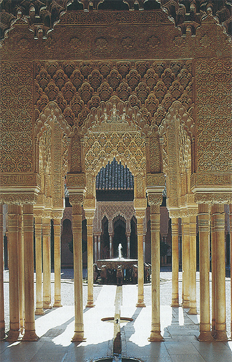
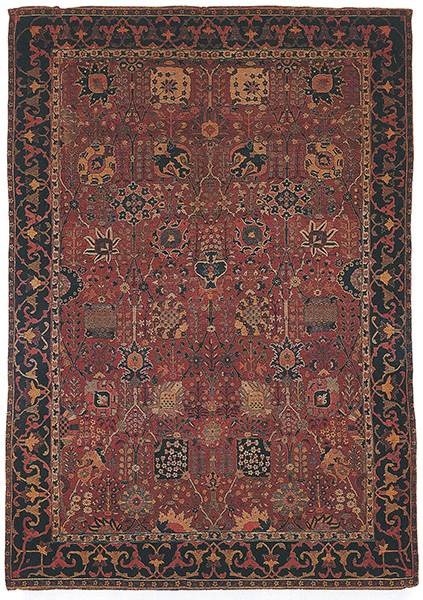
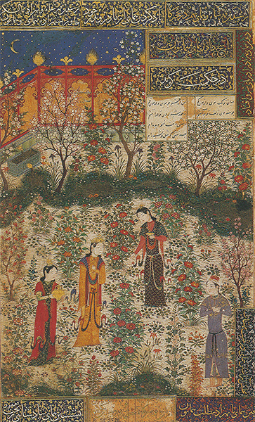
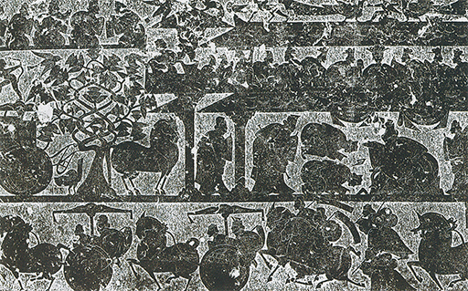
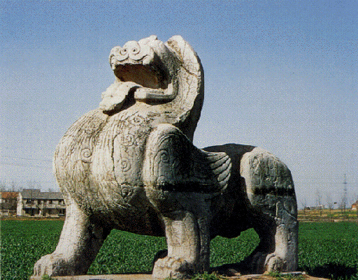
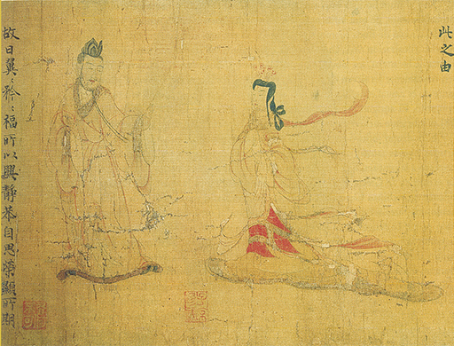
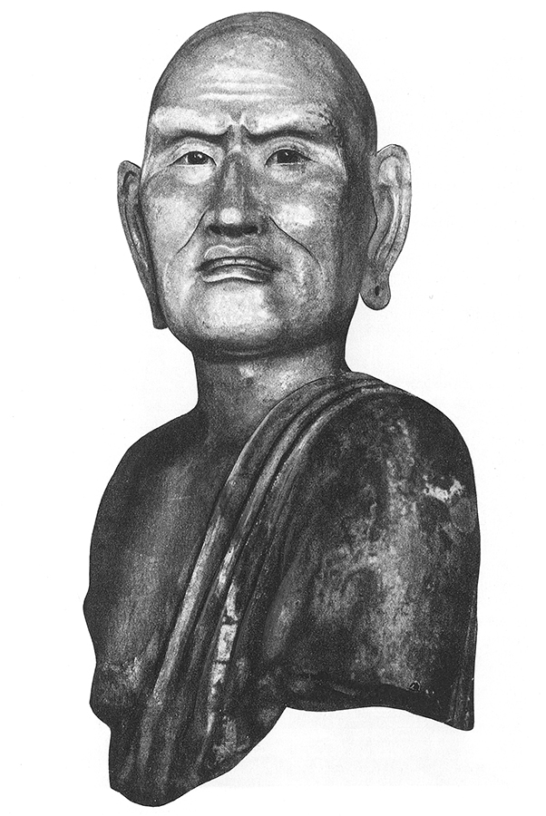
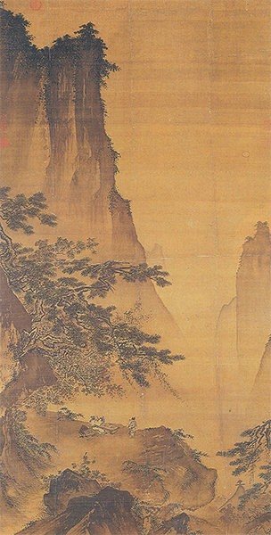
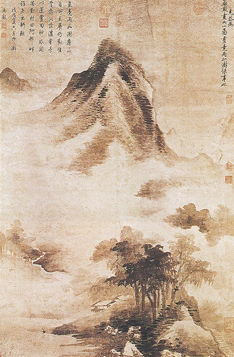
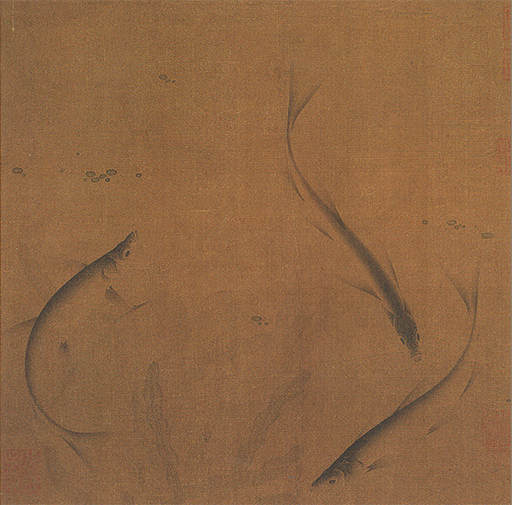

7
MIRANDO A ORIENTE
Islam, China, del siglo II al XIII
Antes de regresar a Occidente y proseguir la historia del arte en Europa, debemos echar al menos una ojeada a lo que acontecía en otras partes del mundo durante esas centurias de agitación. Resulta interesante ver cómo reaccionaron otras dos grandes religiones ante el problema de las imágenes que tanto se debatió en el espíritu del mundo occidental. La religión de Oriente Medio, que barrió cuanto la había precedido en los siglos VII y VIII, la religión de los conquistadores musulmanes de Persia, Mesopotamia, Egipto, norte de África y España, fue más rigurosa aún que el cristianismo en este aspecto, prohibiendo de manera absoluta las imágenes. Pero al arte como tal no se lo suprime fácilmente, y los artistas de Oriente, a los que no se permitía representar seres humanos, dejaron correr su imaginación en formas decorativas y lineales, creando la más sutil ornamentación de tracería: el arabesco. Supone una experiencia inolvidable pasear por los patios y salones de la Alhambra (ilustración 90) y admirar la inagotable variedad de estos esquemas decorativos. Fuera incluso de los dominios del islam, el mundo se familiarizó con aquellas invenciones a través de las alfombras orientales (ilustración 91). Sus diseños sutiles y la riqueza de sus gamas cromáticas se los debemos, a fin de cuentas, a Mahoma, quien alejó el espíritu del artista de los objetos del mundo real para impulsarlo hacia el maravilloso de las líneas y los colores. Sectas musulmanas posteriores fueron menos estrictas en su interpretación del repudio de las imágenes, permitiendo que se representaran figuras en tanto no tuvieran ninguna significación religiosa. Las ilustraciones de novelas, historias y fábulas realizadas en Persia a partir del siglo XIV, y también posteriormente en India, bajo el dominio de los musulmanes (Mogul) muestran cuánto habían aprendido los artistas de esos países de la disciplina que les redujo a dibujar formas lineales. La escena a la luz de la luna en un jardín (ilustración 92), de una novela persa del siglo XV, constituye un ejemplo perfecto de esa maravillosa habilidad. Parece un tapiz que haya adquirido vida en un mundo de cuento de hadas; en él hay tan escasa ilusión de realidad como en el arte bizantino, incluso menos tal vez. Carece de escorzos, no intenta mostrarnos la luz y la sombra, ni la estructura del cuerpo. Las figuras y las plantas parece casi que hayan sido recortadas en papeles de colores para ser distribuidas después sobre la página formando un conjunto perfecto. Pero, por ello mismo, las ilustraciones encajan aún mejor en el libro que si el artista se hubiera propuesto crear la ilusión de una escena real. Podemos leer en páginas semejantes casi como leemos en un texto. Es posible seguir con la mirada desde al héroe que se halla en pie con los brazos cruzados, en la zona de la derecha, hasta a la heroína que se acerca a él, y dejar que nuestra imaginación vague por el mágico jardín iluminado por la luna sin que nunca, por lo demás, consigamos integrarnos totalmente en él.

90 Patio de los Leones, la Alhambra, Granada, España, 1377. Palacio islámico.

91 Alfombra persa, siglo XVII. Victoria and Albert Museum, Londres.

92 El príncipe persa Humay conoce a la princesa china Humayun en su jardín, h. 1430-1440. Miniatura del manuscrito persa de una novela; Museo de Artes Decorativas, París.
La intromisión de la religión en el arte fue aún mayor en China. Sabemos muy poco acerca de los inicios del arte chino, salvo que los hombres de aquel país fueron muy expertos en el arte de fundir el bronce desde épocas muy remotas, y que algunas de las vasijas de bronce utilizadas en los templos antiguos se remontan al primer milenio a.C., habiendo quienes afirman que son aún más antiguas. Nuestras referencias de la pintura y la escultura chinas, sin embargo, no son tan remotas. En los siglos inmediatamente anteriores y posteriores al Cristo, los chinos adoptaron costumbres funerarias semejantes a las de los egipcios, existiendo en sus cámaras mortuorias, como en las de estos últimos, cierto número de escenas que reflejan la vida y los usos de aquellos lejanos días (ilustración 93). En aquella época ya se había desarrollado lo que actualmente denominamos arte típico chino. Los artistas chinos no eran tan aficionados como los egipcios a las formas angulares rígidas, prefiriendo las curvas sinuosas. Cuando tenían que representar un caballo encabritado, parecían extraerlo de cierto número de formas redondeadas ininterrumpidas. Y lo mismo podemos observar en la escultura china, que parece girar y entrelazarse, sin, no obstante, perder su solidez y su firmeza (ilustración 94).

93 Una recepción, h. 150. Estampa a partir de un relieve de la tumba de Wu Liang-tsé; provincia de Shantung, China.

94 Bestia alada, h. 523. Tumba de Xiao Jing, cercana a Nankín, Jiangsu, China.
Algunos de los más importantes maestros chinos parecen haber tenido un criterio acerca del valor del arte análogo al sostenido por el papa Gregorio el Grande. Consideraban el arte como un medio para recordar al pueblo los grandes ejemplos de virtud de las edades doradas del pasado. Uno de los libros-rollo ilustrados más antiguos que se conservan consiste en una colección de célebres ejemplos de damas virtuosas, escrito en el estilo de las doctrinas de Confucio. Dícese que se remonta al pintor Ku K’ai-chi, que vivió en el siglo IV. Uno de sus dibujos más notables (ilustración 95) muestra a un marido acusando injustamente a su esposa, poseyendo toda la nobleza y dignidad que relacionamos con el arte chino. Es tan claro en sus gestos y disposición como puede esperarse de un cuadro que también se propone introducir una lección en el hogar. Muestra, además, que el artista chino dominaba ya el difícil arte de representar el movimiento. No hay nada rígido en esta obra china primitiva, porque la predilección por las líneas onduladas confiere un sentido de movimiento a toda esta pintura.

95 Ku K’ai-chi, Esposo reprendiendo a su esposa, h. 400. Detalle de un rollo de seda; probablemente una copia del original; Museo Británico, Londres.
Pero el impulso más importante que el arte chino recibió había de venirle, probablemente, de otra influencia religiosa: la del budismo. Los monjes y ascetas del círculo de Buda fueron representados en estatuas asombrosamente llenas de vida (ilustración 96). Una vez más observamos los trazos curvilíneos en la forma de las orejas, los labios o las mejillas, pero sin que falseen las formas reales; únicamente les sirven de conexión entre sí. Advertimos que una obra semejante no es casual, sino que cada cosa está en su sitio contribuyendo al efecto del conjunto. El antiguo principio de las máscaras primitivas (ilustración 28) es suficiente incluso para una tan adecuada representación del rostro humano.

96 Busto de Lohan, h. 1000. Hallado en I-Chou, China; terracota vidriada, aproximadamente tamaño natural; antigua colección Fuld, Frankfurt.
El budismo influyó sobre el arte chino no solamente al proporcionar a los artistas nuevas tareas, sino introduciendo un concepto completamente nuevo respecto a la pintura, una consideración tal para los logros artísticos como nunca existió en la Grecia antigua o en la Europa anterior a la época del Renacimiento. Los chinos fueron los primeros que no consideraron el arte de pintar como una tarea servil, sino que situaron al pintor al mismo nivel que al inspirado poeta. La religión de Oriente enseñaba que no existía nada tan importante como la bien ordenada meditación. Meditación significa pensamiento profundo. Meditar es pensar y reflexionar acerca de la misma verdad sagrada durante muchas horas, fijar una idea en el espíritu y contemplarla desde todos lados sin apartarse de ella. Para los orientales es una especie de ejercicio mental, al que acostumbran otorgar más importancia todavía de la que nosotros damos al ejercicio físico o al deporte. Algunos monjes meditaban sobre simples palabras, dándoles vueltas en sus mentes, sentados durante días enteros y escuchando el silencio que precede y sigue a la sílaba sagrada. Otros meditaban pensando en las cosas naturales, el agua por ejemplo, acerca de lo que podemos aprender de ella, que, tan humilde, cede, y sin embargo consume a la sólida roca; cuán clara, fría y fugaz es, y da vida al campo sediento; o sobre las montañas, que siendo recias y señoriales, son tan bondadosas que permiten que los árboles crezcan sobre ellas. Tal vez por ello, el arte religioso chino llegó a ser empleado, menos para referir las leyendas de Buda y de los maestros chinos o la enseñanza de una doctrina particular —como se empleó el arte cristiano en el medievo—, que como una ayuda para la práctica de la meditación. Artistas devotos empezaron a pintar el agua y las montañas con espíritu reverente, no para enseñar una lección determinada ni con un fin puramente decorativo, sino para suministrar puntos de apoyo a un pensamiento profundo. Sus pinturas sobre rollos de seda fueron guardadas en estuches preciosos, siendo desenrolladas sólo en momentos apacibles, para ser contempladas y meditadas al modo con que se abre un libro de poesía y se lee y relee un hermoso poema. Ése es el propósito que anima los más excelentes paisajes chinos de los siglos XII y XIII. No es fácil para nosotros adaptarnos a este estado de ánimo, porque somos europeos inquietos con poca paciencia y conocimiento de la técnica de la meditación, no mayor, supongo, que el que los chinos antiguos tuvieron respecto a la técnica de la educación física. Pero si contemplamos prolongada y atentamente una pintura como la de la ilustración 97, tal vez comencemos a experimentar algo del espíritu con que fue realizada así como del elevado fin a que servía. No debemos, naturalmente, esperar la configuración de un paisaje real. Los artistas chinos no salían al aire libre para situarse frente a algún tema y esbozarlo. Muy al contrario, incluso aprendían su arte mediante un extraño método de meditación y concentración que empezaba por adiestrarles en «cómo pintar pinos», «cómo pintar rocas», «cómo pintar nubes», estudiando no la naturaleza, sino las obras de los maestros famosos. Solamente cuando ya habían adquirido a fondo esta destreza se ponían en camino y contemplaban la hermosura de la naturaleza para captar el estado de ánimo del paisaje. Al regreso, trataban de recobrar esos estados de ánimo coordinando sus imágenes de pinos, rocas y nubes de modo muy semejante a como el poeta puede reunir un cierto número de imágenes que se hubieren presentado en su mente durante el curso de un paseo.

97 Ma Yüan, Paisaje a la luz de la luna, h. 1200. Rollo colgante, tinta y color sobre seda, 149,7 x 78,2 cm; Museo del Palacio Nacional, Taipei.
La ambición de esos maestros chinos era adquirir tal facilidad en el manejo del pincel y la tinta que pudieran escribir sus visiones, mientras se hallaba fresca todavía su inspiración. Con frecuencia anotaban unas cuantas líneas poéticas y realizaban la pintura en el mismo rollo de seda. Los chinos, por tanto, consideran infantil perseguir los detalles en los cuadros y compararlos después con los del mundo real. Prefieren encontrar en ellos las huellas visibles del entusiasmo del artista. Puede no ser fácil para nosotros apreciar la osadía de esas obras, tales como la de la ilustración 98, consistente tan sólo en algunas formas vagas de cumbres montañosas emergiendo de entre las nubes. Pero si tratamos de situarnos en el puesto del pintor y de experimentar algo del respeto que él debió sentir ante esas cumbres majestuosas, podremos al menos alcanzar un atisbo de lo que los chinos valoran superlativamente en arte. Más fácil nos resulta a nosotros admirar la misma destreza y concentración en temas más familiares.

98 Kao K’o-kung (atribuido), Paisaje después de la lluvia, h. 1300. Rollo colgante, tinta sobre papel, 122,1 x 81,1 cm; Museo del Palacio Nacional, Taipei.
La pintura de tres peces en un estanque nos da una idea de la paciente observación que debió emplear el artista en el estudio de su sencillo tema, así como de la facilidad y maestría con que lo plasmó al ponerse a ejecutar su obra. Nuevamente observamos cuán aficionados eran los artistas chinos a las curvas graciosas y de qué modo podían explotar sus efectos para dar la sensación de movimiento. Las formas no parecen seguir una pauta simétrica clara. Ni siquiera están distribuidas como en las miniaturas persas. Sin embargo, advertimos que el artista las ha equilibrado con pasmosa seguridad. Se pueden contemplar tales imágenes durante mucho tiempo sin aburrirse. Es un experimento que merece la pena intentar.

99 Liu Ts’ai (atribuido), Tres peces, h. 1068-1085. Hoja de álbum; tinta y color sobre seda, 22,2 x 22,8 cm; Museo de Arte de Filadelfia.
Hay algo maravilloso en esta limitación del arte chino, en esa deliberada sujeción a unos cuantos temas sencillos de la naturaleza. Pero casi no hace falta decir que tal concepto de la pintura también tiene sus peligros. Con el paso del tiempo, casi cada tipo de pincelada con el que se podía pintar una caña de bambú o una áspera roca fue conservado y clasificado tradicionalmente, y fue tan grande la admiración por las obras del pasado que los artistas cada vez se aventuraron menos a confiar en su propia inspiración. Los criterios acerca de la pintura se mantuvieron muy altos a través de los siglos subsiguientes tanto en China como en Japón (que adoptó las concepciones chinas), pero el arte se fue convirtiendo cada vez más en una especie de gracioso y primoroso juego que perdió mucho de su interés. Solamente tras un nuevo contacto con las producciones del arte occidental, en el siglo XVIII, fue cuando los artistas japoneses se arriesgaron a aplicar los métodos occidentales a temas nuevos. Ya veremos cuán fructíferos resultaron también esos experimentos para Occidente cuando fueron conocidos por vez primera.

Hidenobu, Niño japonés pintando un tallo de bambú, inicios del siglo XIX. Grabado en madera, 13 x 18,1 cm.